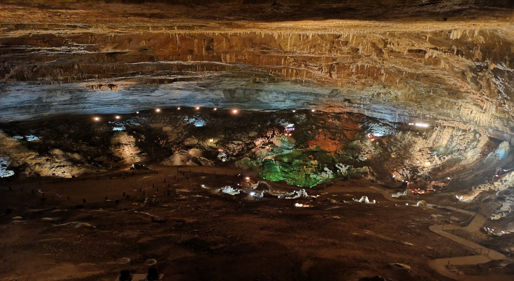

Le gouffre
Formé il y a environ 145 millions d’années, le gouffre a une longueur de 130 mètres, une largeur de 100 mètres et une hauteur
de
40 mètres.
Probablement connue par les habitants depuis des siècles, cette cavité fut explorée officiellement le 5 février
1899 par Emile Fournier, membre de la faculté et de l’Académie des Sciences de Besançon.
